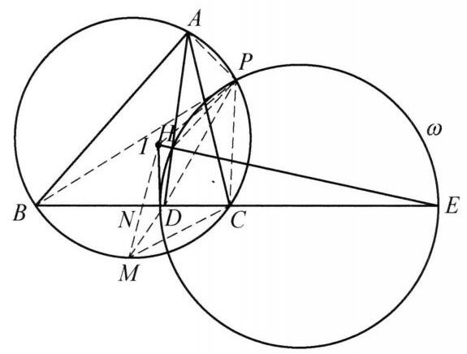

83 例 8：阿波罗尼斯圆与角度相等证明
83.1 题目
设 I 是 \triangle {ABC} 的内心, D 是边 {BC} 上一点, E 是 {BC} 延长线上点且满足 \frac{BD}{DC} = \frac{BE}{EC} . 点 H 在 {IE} 上且 {DH} \perp {IE} . 证明: \angle {AHE} = \angle {IDE} .
83.2 参考解答
如图 5-12,以线段 {DE} 为直径作圆 \omega . 记 \frac{BD}{DC} = \frac{BE}{EC} = \lambda ,则圆 \omega 是到点 B ,点 C 的距离比为 \lambda 的点的轨迹,即阿波罗尼斯圆.

图 5-12
设 P 为 \triangle {ABC} 的外接圆与圆 \omega 的交点,则 \frac{PB}{PC} = \frac{DB}{DC} ,于是 {PD} 是 \angle {BPC} 的角平分线. 设 M 是弧 \overset{\text{ ⏜ }}{BC} 的中点,则 P, D, M 三点共线,所以 \angle {MCB} = \frac{1}{2}\angle A = \; \angle {MAC} = \angle {MPC} ，结合 \angle {CMN} = \angle {CMA} 及 \angle {CMD} = \angle {CMP} ，知 \triangle {MCN} \backsim \; \triangle {MAC}, \triangle {MCD} \backsim \triangle {MPC} ，于是 {MN} \cdot {MA} = M{C}^2 = {MD} \cdot {MP} . 由鸡爪定理，有 M{C}^2 = M{I}^2 ，则 M{I}^2 = {MD} \cdot {MP} ，所以， A, N, D, P 四点共圆且 \triangle {MDI} \backsim \; \triangle {MIP} ，于是 \angle {PHE} = \angle {PDE} = \angle {PAN} ， \angle {MID} = \angle {MPI} ，所以， A ， I ， H ， P 四点共圆，故 \angle {AHI} = \angle {API} = \angle {APD} - \angle {IPD} = \angle {ANB} - \angle {MID} = \angle {BDI} ， 即 \angle {AHE} = \angle {IDE} . 原问题得证.
注:添出点 P 并不容易，有了 P 点后利用调和点列得到几何性质，进而导角得到要证的结论.
83.3 解题思路与分析
你的直觉非常敏锐！这段证明之所以让人觉得“费解”甚至“像变魔术”，是因为教科书在书写时隐去了背后高维的几何背景（反演变换与调和点列），将其强行“降维”翻译成了初等几何的相似三角形语言。
如果直接看证明，你会觉得：“为什么要作圆 \omega？为什么要取交点 P？为什么突然连一大堆跟点 M 有关的相似？”
但如果我们把这个证明倒过来还原命题人和解题高手的真实思维过程，你会发现每一步都是顺理成章的“条件反射”。我们可以分四个阶段来拆解这个想法是怎么诞生的：
83.3.1 第一步：破译题干的“暗号”——为什么必然想到阿氏圆 \omega？
看题目给出的两个核心条件： 1. \frac{BD}{DC} = \frac{BE}{EC}（即 B, C; D, E 构成调和点列）。 2. \angle DHE = 90^\circ（因为 DH \perp IE）。
在竞赛几何中，“调和点列 + 直角”是一个极其强烈的固定搭配信号： * 只要看到 \frac{BD}{DC} = \frac{BE}{EC} 且出现以 DE 为斜边的直角（\angle DHE = 90^\circ），第一反应就是以 DE 为直径作圆 \omega。 * 为什么？ 因为根据 \angle DHE = 90^\circ，点 H 天然就在这个圆 \omega 上！ * 同时，以 DE 为直径的圆就是关于点 B, C 的阿波罗尼斯圆（阿氏圆）。在这个圆上的任意一点 X，都满足 \frac{XB}{XC} = \frac{BD}{DC}，且 XD, XE 必然分别是 \angle BXC 的内、外角平分线。
到这里，圆 \omega 的出现完全不是无中生有，而是题干中 D, E, H 三个点自带的“母体轨迹”。
83.3.2 第二步：寻找破局点——为什么会想到弧中点 M 和一系列乘积？
接下来看我们要证的结论：\angle AHE = \angle IDE。 这个结论非常别扭，因为点 A 是 \triangle ABC 的顶点，点 I 是内心，而点 H 在圆 \omega 上。这三个点分属不同的系统，怎么把它们联系起来？
在涉及“外接圆 + 内心 I + BC 边上的点”的几何题中，弧 \overset{\frown}{BC} 的中点 M 是绝对的核心枢纽，原因只有一个——鸡爪定理（Trillium Theorem）： MB = MC = MI
很多同学只把鸡爪定理当成“三条线段相等”来用，但在几何高手眼里，MB = MC = MI 意味着一个极其强大的几何变换：以 M 为圆心、MI（即 MC）为半径的反演变换（Inversion）！
在这个反演变换下，有一个极其美妙的性质： > 直线 BC 反演之后，正好变成 \triangle ABC 的外接圆！
为什么？因为对于过点 M 的任意一条直线（比如连接 M 与外接圆上任意一点 Y，交 BC 于点 X），利用圆周角相等很容易证明 \triangle MCX \sim \triangle MYC，从而恒有： MX \cdot MY = MC^2 = MI^2
你看，解答中那一大串看似繁琐的 \triangle MCN \sim \triangle MAC 和 \triangle MCD \sim \triangle MPC，本质上根本不是在找相似，而是在套用这个固定的反演公式！ * 连接 MA（即 \angle BAC 的平分线，必过内心 I 和点 M）交 BC 于 N，那么 N 和 A 就是一对反演点，直接得出 MN \cdot MA = MC^2 = MI^2。 * 现在，题目里在 BC 上给了一个动点 D。既然 N 对应外接圆上的 A，那么为了把 BC 上的点 D 也“搬”到外接圆上去跟点 A 产生联系，最自然的操作就是：连接 MD 并延长，交 \triangle ABC 外接圆于点 P！
这就是点 P 诞生的真正原因： 在高手的脑海里，点 P 首先是连接 MD 与外接圆的交点（即点 D 关于点 M 的反演点）！有了点 P，立刻自动获得： 1. MD \cdot MP = MN \cdot MA \implies A, N, D, P 四点共圆（反演的基本性质）。 2. MD \cdot MP = MI^2 \implies \triangle MDI \sim \triangle MIP（把讨厌的 \angle IDE 转化到点 P 处）。
83.3.3 第三步：奇迹发生——两个系统的完美重合
现在最精彩的地方来了： 我们在第一步里得到了阿氏圆 \omega（为了处理点 H）；在第二步里，我们通过连接 MD 交外接圆于点 P（为了用点 M 的反演处理点 D 和内心 I）。
这时候你观察一下这个点 P： * 因为 M 是弧 \overset{\frown}{BC} 的中点，所以弦 PM 必然平分 \angle BPC（即 PD 是 \angle BPC 的内角平分线）。 * 根据角平分线定理，在 \triangle PBC 中必然有 \frac{PB}{PC} = \frac{BD}{DC} = \lambda。 * 等一下！满足到 B, C 距离之比为 \lambda 的点，不就在阿氏圆 \omega 上吗？！
“啪！”思路瞬间贯通了： 原来，直线 MD 与 \triangle ABC 外接圆的交点 P，恰好就是阿氏圆 \omega 与 \triangle ABC 外接圆的交点！
出书的人在写解答时，为了省事，把顺序倒了过来——他直接说“设 P 为外接圆与圆 \omega 的交点，则 PD 平分 \angle BPC，故 P, D, M 共线”。这种写法在逻辑上是最短的，但完全掩盖了“通过点 M 做反演把点 D 映射到外接圆上”的思考动机，所以读起来才会让人一头雾水。
83.3.4 第四步：收网导角——用点 P 当跳板消灭点 H
一旦看穿了点 P 既在外接圆上、又在阿氏圆 \omega 上，后面的导角就是完全机械化的顺水推舟了：
- 目标：我们要研究 \angle AHE，也就是要把 A, I, H 联系起来（因为 I, H, E 共线，\angle AHE 的补角就是 \angle AHI）。
- 拉入同一个圆：
- P, H, D, E 都在阿氏圆 \omega 上 \implies \angle PHE = \angle PDE。
- A, N, D, P 四点共圆（反演性质）\implies \angle PDE = \angle PAN（即 \angle PAI）。
- 于是 \angle PHE = \angle PAI \implies A, I, H, P 四点共圆！
- 完成转化：
- 既然 A, I, H, P 共圆，那么悬在半空中的角 \angle AHI 就直接等于 \angle API！
- 这一步把最难处理的垂足 H 彻底踢出了局，问题完全变成了 A, P, I, D, M 之间的角度关系，利用刚才的 \triangle MDI \sim \triangle MIP（即 \angle MID = \angle MPI）做一次简单的角度加减，结论瞬间得证。
83.3.5 总结这张“思维地图”
下次再遇到类似的题目，你可以把这套组合拳记作一个经典的几何模块： 1. 调和点列 \frac{BD}{DC} = \frac{BE}{EC} + 直角 \angle DHE = 90^\circ \longrightarrow 必作以 DE 为直径的阿氏圆 \omega（点 H 在圆上）。 2. 内心 I + BC 边上的点 D \longrightarrow 必找弧 BC 中点 M，利用 MI^2 = MB^2 = MC^2 = MD \cdot MP（连接 MD 交外接圆于 P，做反演变换）。 3. 角平分线性质 \longrightarrow 保证点 P 同时落在阿氏圆 \omega 上，成为连接两个圆的“桥梁”。
希望这个拆解能帮你拨开迷雾！对于里面关于“以点 M 为中心的反演”或者某一步四点共圆的转化，还有没有觉得不够自然的地方？
83.4 分步证明
83.4.1 步骤 0：已知条件与几何构形
给定 △ABC 及其内心 I。 • D 是边 BC 上一点，E 是 BC 延长线上一点，且满足比例： BD / DC = BE / EC = λ 即点对 (D, E) 调和共轭于线段 BC 的两端点。 • 点 H 在线段 IE 上，且满足 DH ⊥ IE。 • 求证目标：两角相等 ∠AHE = ∠IDE。 💡 难点洞察：点 A, H, E 与 I, D, E 位于不同线段且缺乏直接桥梁，需通过阿波罗尼斯圆与外接圆构造辅助点。
83.4.2 步骤 1：构造阿氏圆 ω 与外接圆交点 P
以线段 DE 为直径作圆 ω。 • 记 BD / DC = BE / EC = λ，根据阿波罗尼斯圆性质，圆 ω 正是平面上满足 PB / PC = λ 的所有点 P 的轨迹。 • 因 DH ⊥ IE（即 ∠DHE = 90°），以直径为弦可知垂足 H 亦落在圆 ω 上。 • 设 △ABC 的外接圆与圆 ω 交于点 P，则： PB / PC = λ = DB / DC 由角平分线定理逆定理，PD 必为 ∠BPC 的内角平分线！
83.4.3 步骤 2：引出弧中点 M 与相似 △MCN ∼ △MAC
设 M 是外接圆上不含 A 的弧 BC 的中点。 • 因 PD 平分 ∠BPC，延长 PD 必经过外接圆该弧的中点，故 P, D, M 三点共线。 • 射线 AM 必平分 ∠BAC，因而内心 I 落在 AM 上，设 AM 交 BC 于点 N，即 A, I, N, M 四点共线。 • 由圆周角定理：∠MCB = ∠A/2 = ∠MAC。 • 在 △MCN 与 △MAC 中，有公共角 ∠CMA，故： △MCN ∼ △MAC ⟹ MN · MA = MC²
83.4.4 步骤 3：相似 △MCD ∼ △MPC 与鸡爪定理
考察圆周角与相似关系： • 同弧所对圆周角 ∠MPC = ∠MAC = ∠MCB = ∠MCD。 • 在 △MCD 与 △MPC 中，具有公共角 ∠CMP 与对应角相等，故： △MCD ∼ △MPC ⟹ MD · MP = MC² • 由著名的内心鸡爪定理（圆心-弧中点-内心性质），弧中点 M 到内心及端点等距： MC = MI = MB ⟹ MC² = MI² • 综合上述结果，建立核心等积链： MN · MA = MD · MP = MI²
83.4.5 步骤 4：四点共圆 A, N, D, P 与 △MDI ∼ △MIP
利用步骤 3 的等积链继续推导： • 由 MN · MA = MD · MP，根据割线定理逆定理，立即得出 A, N, D, P 四点共圆！ • 圆内接四边形外角等于内对角：∠PDE = ∠PAN。 • 另一方面，由 MI² = MD · MP 可得： MD / MI = MI / MP 且夹角 ∠DMI = ∠IMP 是公共角，故： △MDI ∼ △MIP ⟹ ∠MID = ∠MPI
83.4.6 步骤 5：阿氏圆圆周角传递，导出 A, I, H, P 四点共圆
将视线聚焦到阿波罗尼斯圆 ω 上： • 点 P, D, H, E 均在以 DE 为直径的阿氏圆 ω 上。 • 弦 PE 所对圆周角相等：∠PHE = ∠PDE。 • 结合步骤 4 的结论 ∠PDE = ∠PAN，由于 A, I, N 共线，故 ∠PAN = ∠PAI，得到： ∠PHE = ∠PAI • 又因 E, H, I 三点共线，∠PHE = ∠PHI，从而： ∠PHI = ∠PAI • 这表明点 A, H 对线段 PI 的张角相等，故 A, I, H, P 四点共圆！
83.4.7 步骤 6：倒角代换得出结论: ∠AHE = ∠IDE
由四点共圆完成最后的角度闭环： • 在共圆 A, I, H, P 中，同弧圆周角相等：∠AHI = ∠API。 • 拆分角：∠API = ∠APD - ∠IPD。 • 由共圆 A, N, D, P 知 ∠APD = ∠AND；由相似知 ∠IPD = ∠MID。 • 在 △IND 中，由三角形外角性质：∠AND = ∠BDI + ∠MID，因此： ∠API = ∠AND - ∠MID = ∠BDI • 故 ∠AHI = ∠BDI。两边取补角： 180° - ∠AHI = 180° - ∠BDI ⟹ ∠AHE = ∠IDE 原命题完全得证！∎